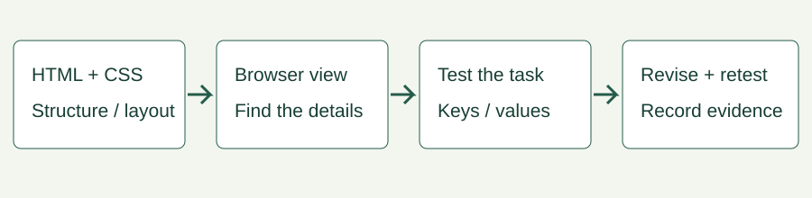

UNIT 2 APPLICATIONS · UNIT 4 WEB AND ONLINE LEARNING
Build a page people can use
Make a workshop page that helps a visitor find the date and check a group size. Work in a plain-text editor and a browser. No accounts, server or real personal data are needed.
Download editable pack Inspect starter · Try finished example · Explained solution

1. Predict before changing anything
Open the starter. Without opening the solution, list three details a visitor or assistive technology may struggle to interpret. Is 04/05/2027 unambiguous to every reader? Record a prediction, not an invented test result.
2. Make and explain the edits
- Copy the starter into your working folder. Keep the supplied style sheet beside it. Use heading elements for the event title and section titles, and use header, main and footer for meaningful page regions.
- Add a skip link to main. Keep links and buttons as native interactive elements; do not imitate a button with a span.
- Associate a visible label with the number field using matching for and id values. Set type, required, minimum, maximum and step for whole-number values from 1 to 20. Connect the help with aria-describedby.
- Keep the document language as en-AU. Mark the French phrase with lang="fr". Write the date as 4 May 2027 and use a time element with datetime="2027-05-04". A language tag does not translate text or choose a time zone.
- Add a native submit button. Use preview.js with the supplied form, field and status IDs to handle a local preview without sending data. Explain the submit and invalid handlers before copying them.
- Keep a logical document order, visible keyboard focus and a layout that reflows. Inspect the finished example only after trying your changes.
For Unit 2, concentrate on structure, presentation and working controls. For Unit 4, justify the language, validation, accessibility and evidence decisions as well.
3. Test a task, not just the appearance
Download a blank test record. Record browser/version, date, viewport or zoom, input method, expected outcome, actual outcome, evidence and revision. Use the same tasks in each browser available to your class.
- Keyboard: reload, press Tab, activate the skip link with Enter, then reach the field and button. Check visible focus and no trap. Repeat using Shift+Tab.
- Input rule: try empty, 0, 1, 20, 21 and 2.5. Only 1 and 20 should pass these cases. Correct an invalid value and retest.
- Reflow: narrow the viewport to about 390 CSS pixels and inspect at 200% zoom separately. Check that instructions and controls remain usable. These two checks alone do not establish WCAG conformance.
- Language/date: inspect the source language tags and ask a reader to identify the session date. If a screen reader is available, record its name/version and actual announcement. Otherwise mark that test not run.
- Compare browsers: record an actual second browser if available; native number-field messages and controls can differ. Do not copy the first result into the second row.
4. Revise, retest and explain
Choose one observed issue. Record its effect, the change and the repeated task result. Keep working source and evidence. A successful number check does not establish truthfulness, secure storage or server validation.
Illustrative reasoning record contains fictional observations to show how a revision is justified. It is not a record of tests performed on your device.
Teaching sequence and feedback
Model the label–field connection with one control. Let students complete the remaining edits, then swap roles as operator and observer, or narrate their own test. If the answer is “it looks better”, ask which task improved and what evidence supports it. Reduce support by asking for a second field or a different event without copying the solution.
Use this instead of a similar chapter task. Classroom tool availability and independent curriculum review remain separate from the supplied resource.
Sources and limits
Checked 18 October 2026. W3C form labels · W3C language declarations · MDN time element · W3C preliminary accessibility checks.
This is a bounded implementation exercise, not a complete accessibility audit or a production booking service.